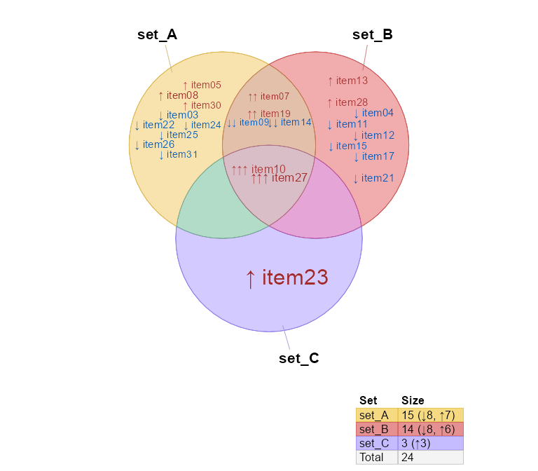
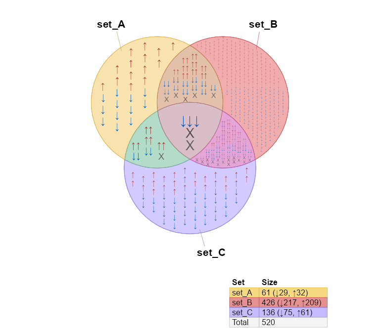

The venndir package provides Venn directional diagrams, that can optionally display item labels inside the overlap regions.
The pkgdown reference: jmw86069.github.io/venndir
Installation
The development version of venndir can be installed with:
# install.packages("remotes")
remotes::install_github("jmw86069/venndir");Features of venndir
The core is venndir() which takes a setlist as input and produces a Venn diagram. When the setlist contains directionality (sign), the directional overlaps are also displayed.
To illustrate the point, make_venn_test() is used to create test setlist data.
# silence the warnings
options("warn"=-1)
library(venndir)
setlist <- make_venn_test(100, 3)
setlist
#> $set_A
#> [1] "item_067" "item_042" "item_050" "item_043" "item_014" "item_025"
#> [7] "item_090" "item_091" "item_069" "item_093" "item_057" "item_009"
#> [13] "item_072" "item_026" "item_007" "item_099" "item_089" "item_083"
#> [19] "item_036" "item_078" "item_097" "item_076" "item_015" "item_032"
#> [25] "item_086" "item_084" "item_041" "item_023" "item_027" "item_060"
#> [31] "item_053" "item_079"
#>
#> $set_B
#> [1] "item_053" "item_027" "item_096" "item_038" "item_089" "item_034"
#> [7] "item_093" "item_069" "item_072" "item_076" "item_063" "item_013"
#> [13] "item_082" "item_025" "item_097" "item_021"
#>
#> $set_C
#> [1] "item_079" "item_041" "item_047" "item_090" "item_060" "item_095"
#> [7] "item_016" "item_006" "item_072" "item_086" "item_091" "item_039"
#> [13] "item_031" "item_081" "item_050"A setlist is a list of vectors. The names of the list, one for each vector, are the set names. Each vector contains items which are the subject of the Venn overlaps.
Given a setlist, you can create a Venn diagram with venndir():
venndir(setlist)
You can make a proportional Venn diagram, also known as a Euler diagram. Add argument proportional=TRUE.
vo <- venndir(setlist,
proportional=TRUE)
Venn Direction
The namesake of this package is Venn with directionality!
Test with: make_venn_test(..., do_signed=TRUE). Each item is associated with a numerical direction:
-
+1for up -
-1for down
Each vector in setlist_dir is a named vector, whose names are the items, and whose values are the direction, with +1 or -1. Take a look.
setlist_dir <- make_venn_test(100, 3, do_signed=TRUE)
setlist_dir
#> $set_A
#> item_067 item_042 item_050 item_043 item_014 item_025 item_090 item_091
#> -1 1 1 -1 -1 1 -1 -1
#> item_069 item_093 item_057 item_009 item_072 item_026 item_007 item_099
#> -1 1 1 -1 1 1 -1 -1
#> item_089 item_083 item_036 item_078 item_097 item_076 item_015 item_032
#> -1 1 1 1 1 1 -1 1
#> item_086 item_084 item_041 item_023 item_027 item_060 item_053 item_079
#> 1 1 -1 1 -1 1 1 -1
#>
#> $set_B
#> item_053 item_027 item_096 item_038 item_089 item_034 item_093 item_069
#> 1 -1 1 -1 -1 -1 1 -1
#> item_072 item_076 item_063 item_013 item_082 item_025 item_097 item_021
#> 1 1 1 1 1 -1 -1 -1
#>
#> $set_C
#> item_079 item_041 item_047 item_090 item_060 item_095 item_016 item_006
#> -1 -1 1 -1 1 1 1 -1
#> item_072 item_086 item_091 item_039 item_031 item_081 item_050
#> 1 1 1 1 -1 1 -1For biological data, direction is important and relevant. Whether a gene is regulated up or down might be the difference between disease and treatment.
Note
make_venn_tests()can simulate concordance, and the default isconcordance=0.5. Concordance is a measure of how frequently two directions are the same, and is defined(agree - disagree) / (n). Thus,concordance=0means there are the same number that agree as disagree in direction, andconcordance=1means every element agrees in direction.
There are a few ways to summarize directional overlaps, which vary by the amount of detail.
-
overlap_type="overlap"- This method ignores direction. -
overlap_type="agreement"- This method displays agreement and disagreement, with no details about up/down direction. -
overlap_type="concordance"- (default) This method displays concordant directions, up-up, down-down; all discordant combinations are grouped together as “discordant”. -
overlap_type="each"- This method displays each directional overlap.
overlap_type=“concordance”
This option displays the number up-up, and the number down-down, and everything else is considered “discordant”. This approach is effective at conveying direction, without too many details.
Notice the "X" to indicate discordance.
venndir(setlist_dir)
overlap_type=“each”
This option shows the count for each combination. It works best when you want to see all the details, however it can create a lot of labels!
venndir(setlist_dir, overlap_type="each")
overlap_type=“agreement”
This option shows the count that agrees in direction, and the count that disagrees in direction. It does not indicate whether the agreement is up or down.
This option is especially good at summarizing the number that agree and disagree, without including potentially confusing details.
venndir(setlist_dir, overlap_type="agreement")
overlap_type=“overlap”
This option only displays the overlap count, ignoring direction.
venndir(setlist_dir, overlap_type="overlap")
Proportional Venn Direction
As mentioned previously, you can display proportional Venn diagram, (a Euler diagram), which uses the excellent eulerr R package. Add argument proportional=TRUE.

Labeling is often a challenge with proportional Venn diagrams. For very small regions, you can push the label outside with inside_percent_threshold=5. This option will move labels outside when the region is less than 5% of the total area.
venndir(setlist,
proportional=TRUE,
overlap_type="overlap",
label_style="lite box",
inside_percent_threshold=5,
font_cex=c(1.3, 1))
Customizing the Venn diagram
Label styles
The argument label_style can be used to customize the label:
-
label_style="lite"- adds lite shading behind each label -
label_style="shaded"- adds partially transparent shading -
label_style="fill"- adds solid colored shading -
label_style="box"- adds a small outline box around the label
Multiple terms can be combined, for example to add shading and a box:
-
label_style="shaded box"- adds colored shading and a box outline
Label position
Argument show_labels is used to position labels. Each letter defines a type of label, and UPPERCASE or lowercase indicates where to place the label.
- UPPERCASE = outside the Venn diagram
- lowercase = inside the Venn diagram
The letters:
- N = the set name
- C = the overlap count
- S = the signed overlap count(s)
- i = the overlapping items
Guidance:
- The default:
show_labels="Ncs"will show _N_ame outside, _c_ounts inside. When _s_igned labels are shown, they also appear inside. Signed labels are not shown whenoverlap_type="overlap". - Display all labels inside:
show_labels="ncs" - It works best to have the _c_ounts and _s_igned counts together, usually inside.
- To display items,
show_labels="Ni"is recommended, to show _N_ame outside, and _i_tems inside. You can still useshow_items="sign item"so that each item label will include the direction. - When displaying items, the counts and signed counts are automatically moved outside. (There isn’t a great way to place item labels around the count labels. Maybe in future.)
vo4 <- venndir(setlist,
show_labels="ncs",
inside_percent_threshold=0)
Hide line segments with show_segments=FALSE
vo4l <- venndir(setlist,
show_labels="Ncs",
show_segments=FALSE,
inside_percent_threshold=0)
Text Venn for the R Console
There is a text Venn diagram, surprisingly useful for quickly checking overlaps and direction. Note that the R console, and R help examples display colored text, just not in Rmarkdown.
The first example is the basic Venn overlap, without direction.
# Options are used for the RMarkdown
# options("jam.htmlOut"=TRUE, "jam.comment"=FALSE)
setlist <- make_venn_test(1000, 3, do_signed=TRUE)
textvenn(setlist, overlap_type="overlap")
#> set_A&set_B
#> 27
#> set_A set_B
#> 31 390
#>
#> set_A&set_B&set_C
#> 7
#> set_A&set_C set_B&set_C
#> 6 76
#>
#>
#> set_C
#> 71But of course direction is helpful, so here it is with the default overlap_type="concordance" (below)
textvenn(setlist, overlap_type="concordance")
#> set_A&set_B ↑↑: 9
#> 27 ↓↓: 12
#> set_A ↑: 19 X: 6 set_B ↑: 185
#> 31 ↓: 12 390 ↓: 205
#>
#> set_A&set_B&set_C ↑↑↑: 2
#> 7 X: 5
#> set_A&set_C ↑↑: 2 set_B&set_C ↑↑: 39
#> 6 ↓↓: 3 76 ↓↓: 21
#> X: 1 X: 16
#>
#> set_C ↑: 30
#> 71 ↓: 41Not all consoles can display Unicode arrows, so you can use ASCII output only with unicode=FALSE:
textvenn(setlist, overlap_type="concordance", unicode=FALSE)
#> set_A&set_B ^^: 9
#> 27 vv: 12
#> set_A ^: 19 X: 6 set_B ^: 185
#> 31 v: 12 390 v: 205
#>
#> set_A&set_B&set_C ^^^: 2
#> 7 X: 5
#> set_A&set_C ^^: 2 set_B&set_C ^^: 39
#> 6 vv: 3 76 vv: 21
#> X: 1 X: 16
#>
#> set_C ^: 30
#> 71 v: 41
# Revert options
# options("jam.htmlOut"=FALSE, "jam.comment"=TRUE)Sorry, no proportional text Venn diagrams (yet)!
Nudge Venn circles
Another driving reason for this package is that sometimes proportional Venn (Euler) diagrams fail to produce circles that show all the overlaps. While sometimes it is mathematically impossible, other times are just… puzzling.
See below, the overlap set_A&set_B has 1 count, but is not displayed.
overlaps <- c(set_A=187, set_B=146, set_C=499,
`set_A&set_B`=1,
`set_A&set_C`=181,
`set_B&set_C`=219,
`set_A&set_B&set_C`=20);
# convert to setlist
setlist_o <- counts2setlist(overlaps)
venndir(setlist_o,
proportional=TRUE,
font_cex=1.4,
set_colors=c("firebrick2", "dodgerblue", "#9999AA"))
The argument circle_nudge lets you nudge (move) a Venn circle given x,y coordinates. Provide a list named by the set you want to move, with a numeric vector for the x,y coordinates direction.
vo_nudge <- venndir(setlist_o,
font_cex=1.4,
proportional=TRUE,
circle_nudge=list(set_A=c(1, 0), set_B=c(-1, 0)),
set_colors=c("firebrick2", "dodgerblue", "#9999AA"))
Item labels
An optional but useful feature is to include item labels inside the Venn diagram. It helps answer the question, “What are those shared items?” (In my experience, that’s a very early question.)
This step can also include the directional sign, which helps indicate which items are shared, and whether they have the same direction. In cases with too many labels to display, it is sometimes still useful to display the sign, as a visual cue for the proportion of shared or discordant signs.
Two changes are required:
-
Argument
show_labelsmust include"i"to indicate items should be included in the labels. Preferred options:-
"Ni"which shows _N_ame outside, and _i_tems inside. -
"NCi"which shows _N_ame and _C_ounts outside, and _i_tems inside.
-
-
Argument
show_itemsshould be one of-
"item"- to show only the item label -
"sign item"- to show the sign beside each item label -
"sign"- to show only the item label
-
setlist <- make_venn_test(100, 3, do_signed=TRUE);
venndir(setlist,
poly_alpha=0.3,
show_labels="NCi",
show_items="sign item");
Interestingly, the density of labels gives some indication of the relative overlaps.
The same plot using proportional circles makes the label density effectively uniform. Note the option show_items="sign" displays only the directional arrow, and item_cex=2 makes the arrows twice as large as normal.
setlist <- make_venn_test(100, 3, do_signed=TRUE);
venndir(setlist,
poly_alpha=0.3,
show_labels="Ni",
item_cex=2,
show_items="sign",
proportional=TRUE);
The sign is an interesting visual summary when there are too many labels to display otherwise.
setlist <- make_venn_test(1000, 3, do_signed=TRUE);
venndir(setlist,
show_labels="Ni",
show_items="sign",
item_cex=2,
show_segments=FALSE,
max_items=10000);
Again, proportional Venn circles effectively makes the density uniform.
venndir(setlist,
show_labels="Ni",
overlap_type="each",
show_items="sign",
item_cex=4,
max_items=10000,
show_segments=FALSE,
proportional=TRUE)